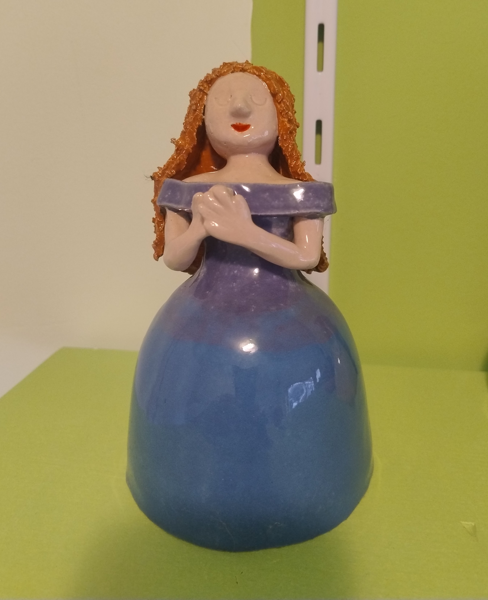

Dansende dame
Een dansende dame die op een stok in de wind wiegt.

Van dansende dames tot bloemen die ook insecten voorzien van water. Ze voegen allemaal extra kleur toe aan de tuin of het balkon. Daarnaast maak ik ook een aantal dingen waarmee je je huis kan opfleuren, zoals de kaartenhouders en de slakken voor aan de muur. Hieronder zie je een gedeelte van de voorwerpen die ik maak. Kom vooral langs op één van de markten waar ik sta voor het meest actuele aanbod.
Een dansende dame die op een stok in de wind wiegt.
Lieve kleine slakjes van keramiek. Prachtig onder een glazen stolp of verstopt tussen de planten. Elk slakje is uniek en met de hand gevormd.
Door middel van een kleurrijke kaartenstandaard kun je je leukste kaarten nog leuker tentoonstellen in je kamer.

Paddenstoelen in verschillende maten en kleuren voor een opvallend detail in de tuin
Labels in de vorm van verschillende groentes voor in de groentetuin of kweekbakjes, zodat je altijd weet wat je gezaaid hebt
Papieren kaartjes met een handgemaakt keramiek bloemetje erop. Een bijzonder en persoonlijk cadeau of wenskaartje dat je kunt bewaren.

Vrolijke keramiek bloemen die je op een stok in je tuin kunt zetten. In verschillende kleuren en maten, perfect om kleur toe te voegen aan je tuin of terras. Weerbestendig en jarenlang mooi.
Mijn producten zijn verkrijgbaar op de markten waar ik sta. Je kunt ook een e-mail sturen als je iets speciaals zoekt of een bestelling wilt plaatsen.